Settimana 48-49
Ultima settimana di carico e poi settimana di recupero/ferie!
Dopo la gara ho deciso di tirare ancora per una settimana prima di scaricare per poter fare la settimana con meno uscite durante le ferie!
Prima uscita
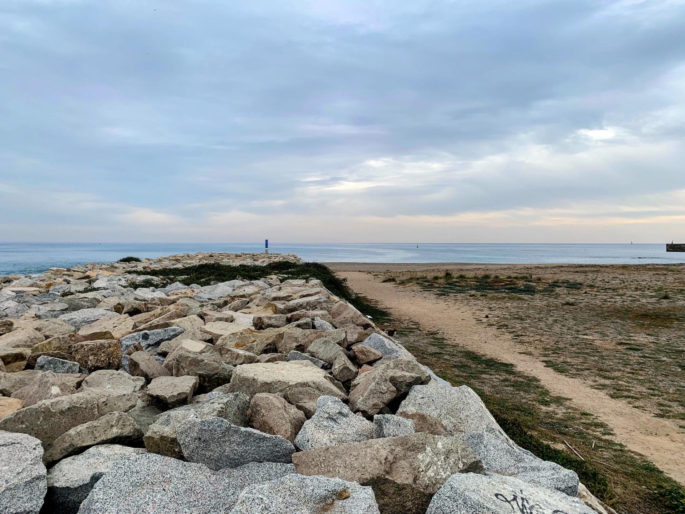
10km Z1. Uscita tranquilla post gara. Gambe un po' stanche ma tutto bene.
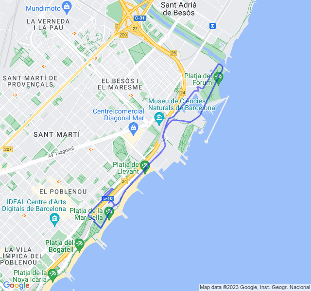
Seconda uscita
8x200 Z5. Allenamento impegnativo ma, non ostante le gambe ancora legnose, portato a termine abbastanza bene!
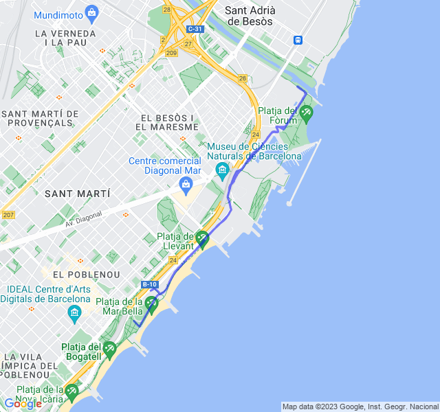
Terza uscita
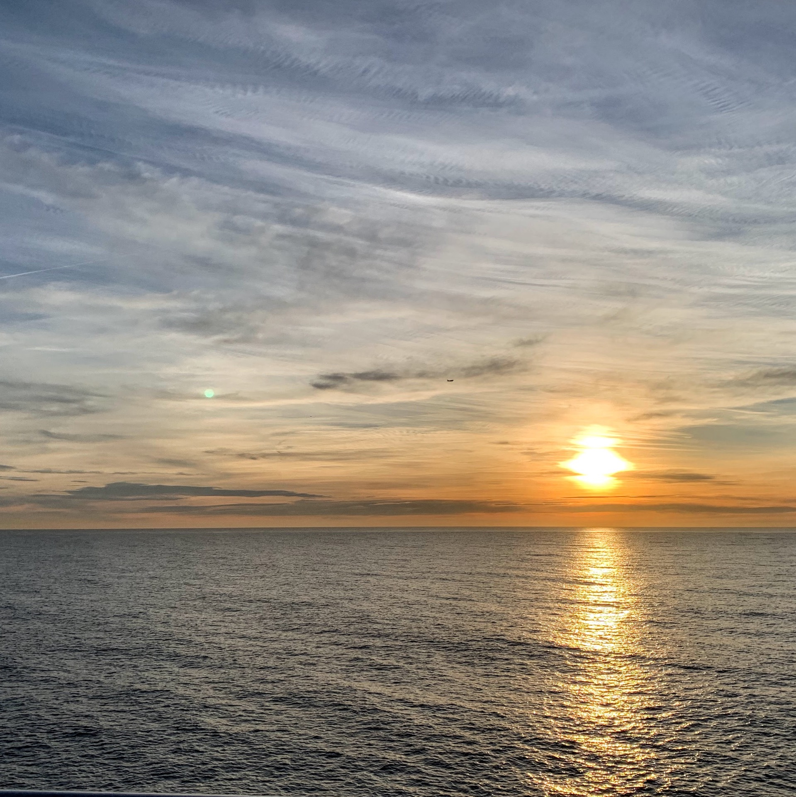
10km Z2. Oggi non ho messo la fascia perché avevo una piccola escoriazione proprio dove sfrega col petto. I battiti son stati un po’ alti e alla fine sono improvvisamente schizzati oltre la mia fc max. 😳 Direi che il cardio fa polso non ha funzionato benissimo.
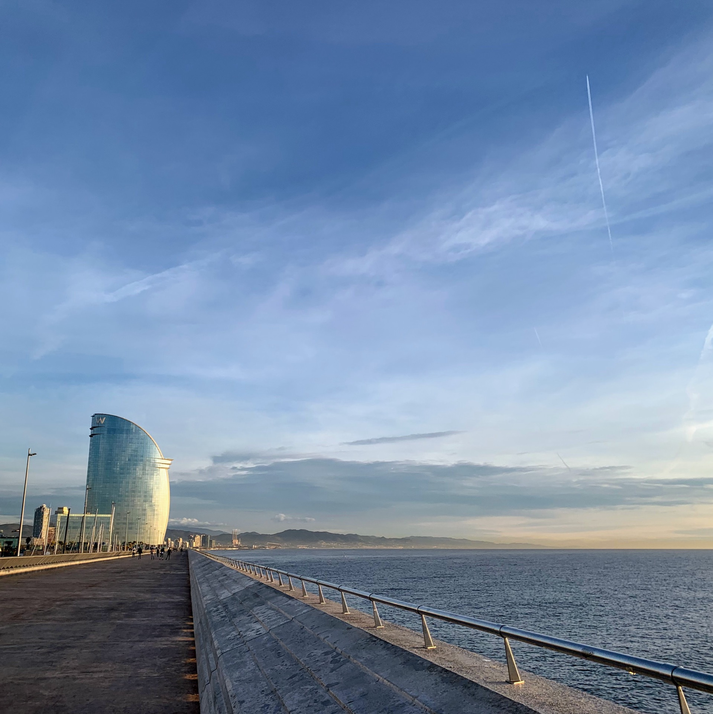
Le sensazioni comunque erano buone, da corsa in Z2.
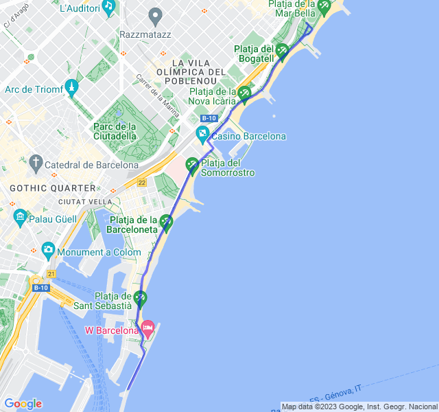
Quarta uscita
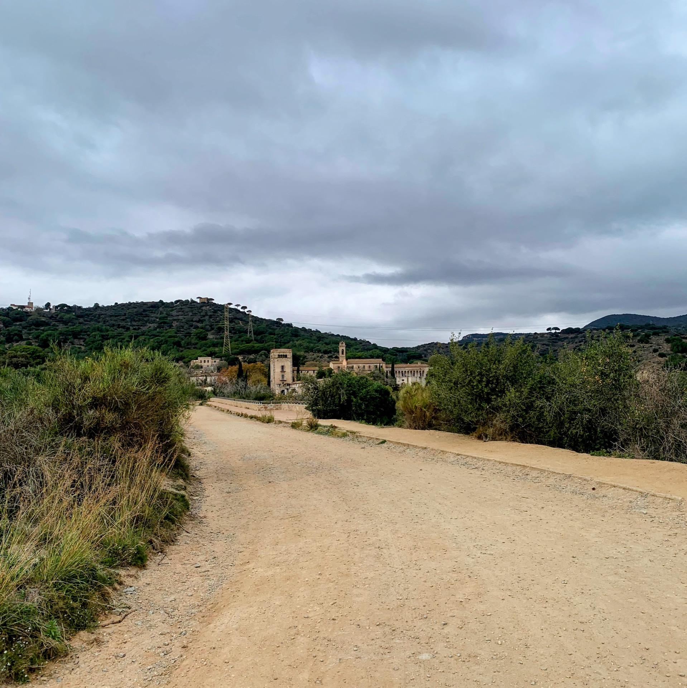
🟢 5km Z1 + 16km Z2 (ultimi 4 in progressione). Oggi un bel lunghetto. Ho deciso di provare un percorso nuovo per non fare sempre il solito lungomare (eh sì, dopo un po' stanca anche quello 😛).
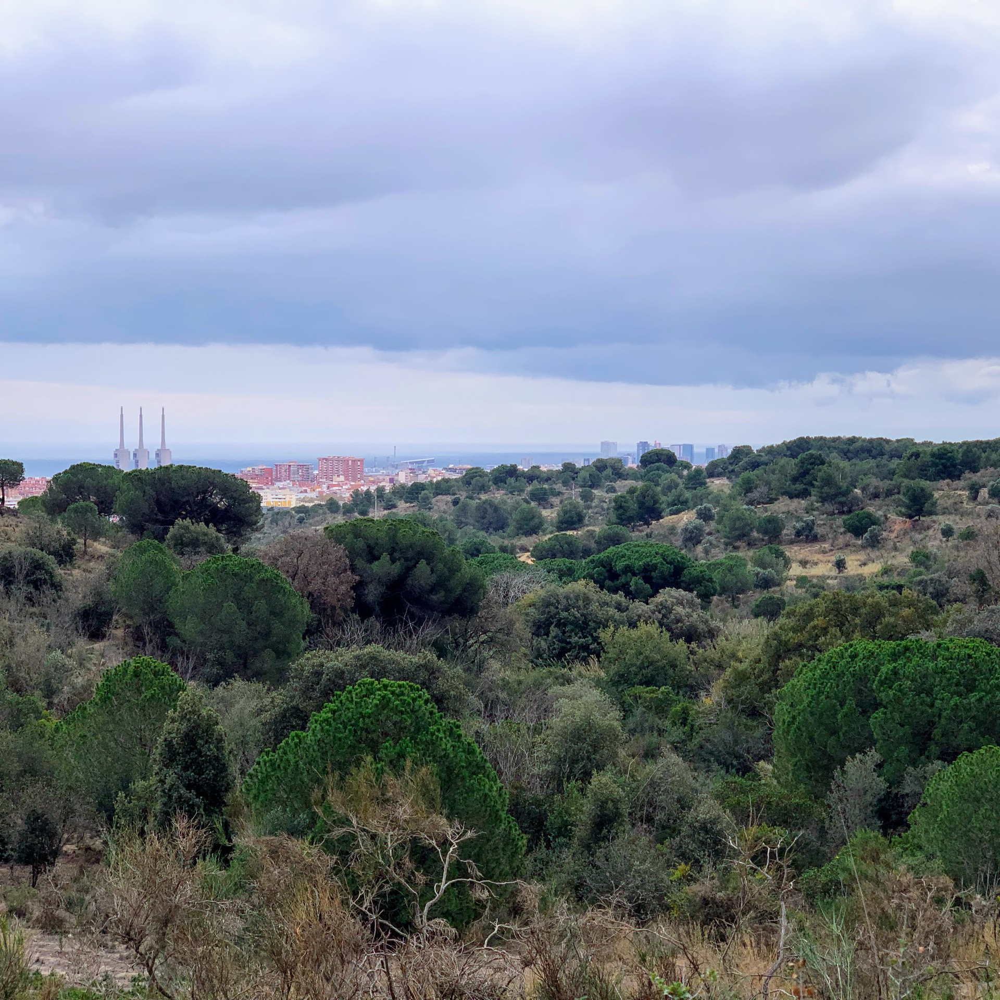
Ne è uscito un bel giro con una salitella centrale che mi ha fatto sofrare in Z3. In compenso direi buono: prima metà con fc bella bassa, seconda metà un po' più veloce e quindi fc alta di conseguenza.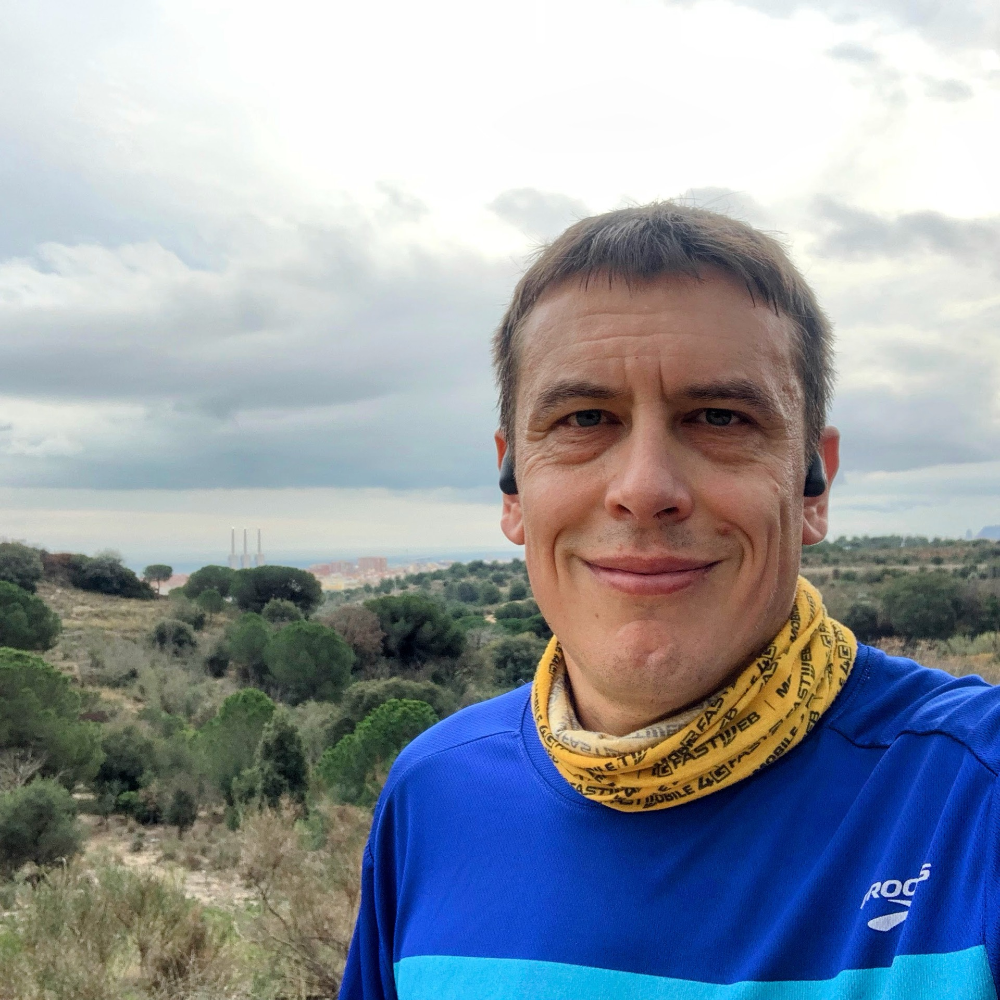
È stato divertente fare un bel lungo dopo un po' di tempo che facevo cose più corte.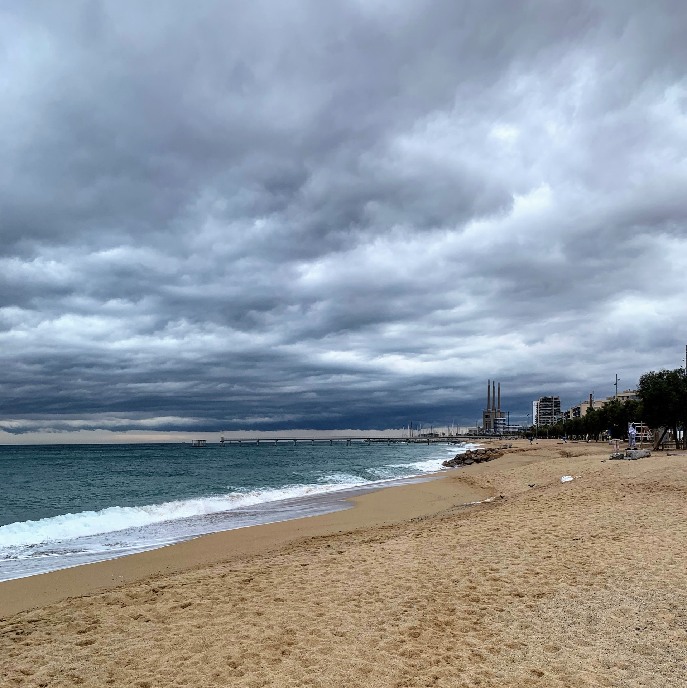
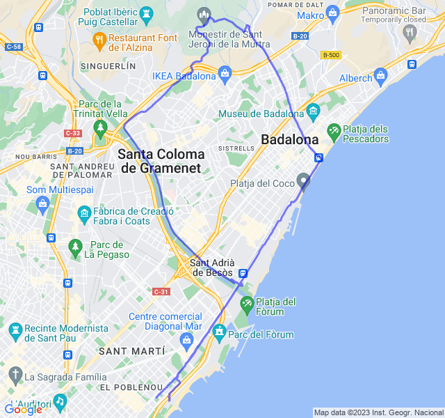
Quinta uscita
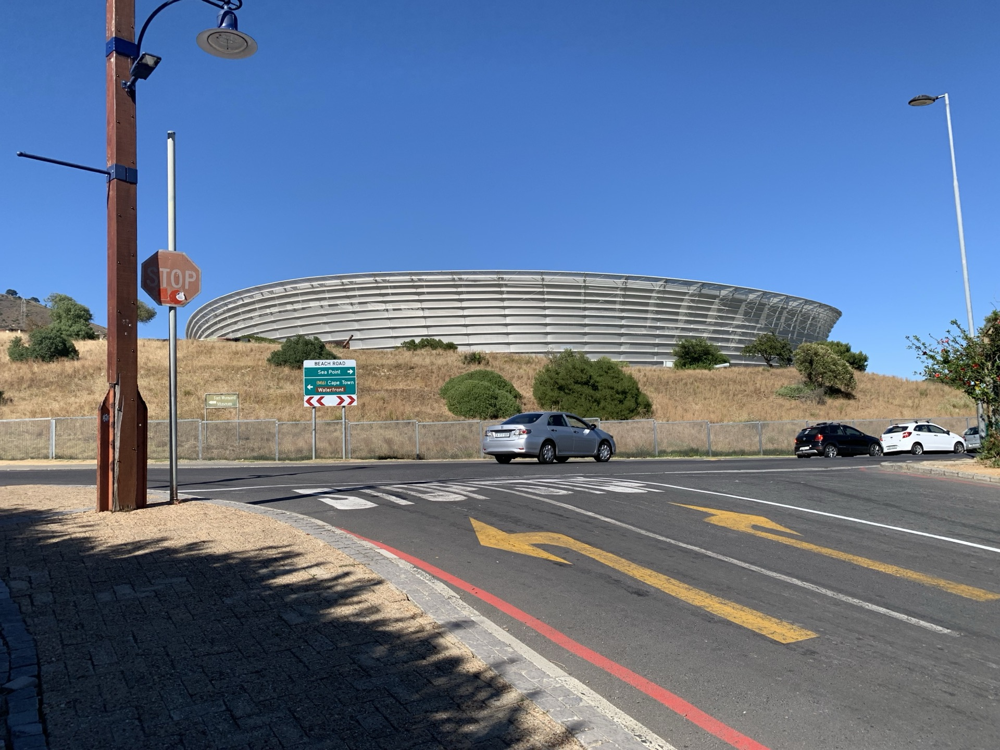
Uscita fuori porta (e che fuori porta... 😜).
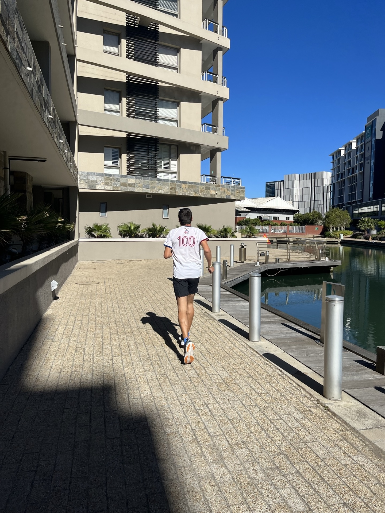
Corsa a sensazione, forse un po' forte ma quando il percorso è nuovo, difficile trattenersi!
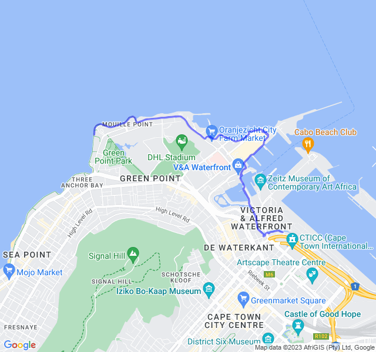